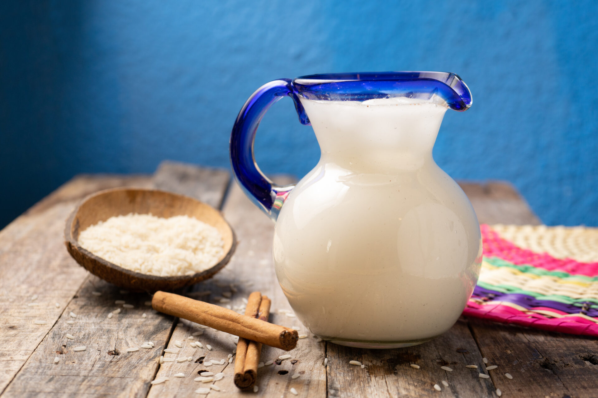

Agua de Horchata
La horchata es una de las aguas frescas más tradicionales de México. Su sabor dulce y suave con toques de canela la hace perfecta para acompañar platillos típicos o para disfrutar por sí sola.
Ingredientes
- 1 taza de arroz
- 1 raja de canela
- 1 litro de agua
- 1 litro de leche
- 1/2 taza de azúcar (ajustar al gusto)
- 1 cucharadita de esencia de vainilla (opcional)
Preparación
- Remoja el arroz con la canela en el agua durante al menos 4 horas o toda la noche.
- Licúa la mezcla hasta que el arroz esté bien triturado.
- Cuela el líquido y mezcla con la leche, el azúcar y la vainilla.
- Refrigera y sirve con hielo.